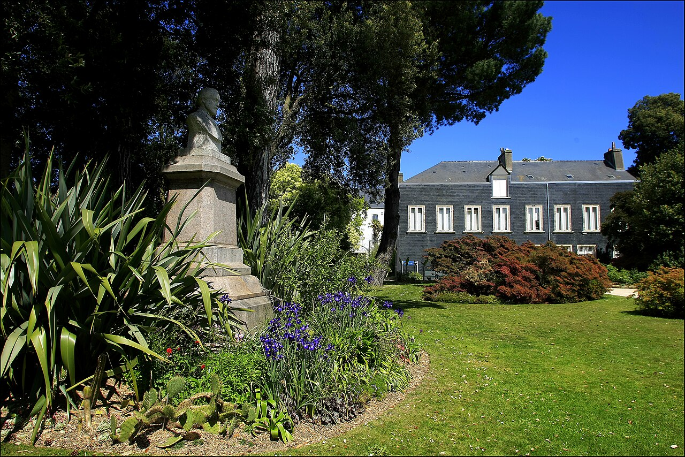

Muséum Emmanuel-Liais : un cabinet de curiosités actuellement fermé
Dans cette fiche
L’essentiel pour visiter
Au cœur de Cherbourg, le muséum Emmanuel-Liais conserve l'héritage d'un cabinet de curiosités mêlant histoire naturelle, archéologie et collections venues de loin. Le musée est fermé pour des raisons de sécurité, sans date officielle de réouverture confirmée au 24 octobre 2026. Le parc Emmanuel-Liais et ses serres sont des lieux distincts qui restent accessibles selon leurs propres horaires.


CABINET DE CURIOSITÉS
Peut-on visiter le muséum Emmanuel-Liais en 2026 ?
Non, pas actuellement. La Ville de Cherbourg-en-Cotentin indique que le muséum est fermé pour des raisons de sécurité. Un chantier de rénovation du bâtiment doit s'inscrire dans un projet architectural et muséographique préservant l'esprit du cabinet de curiosités. Ni la municipalité ni le réseau des musées de Normandie ne donnent à ce stade de date ferme de réouverture. Les horaires trouvés sur des fiches de tourisme correspondent parfois au parc Emmanuel-Liais, non aux salles du muséum.
Il serait donc trompeur d'afficher un billet adulte ou un temps de visite du musée comme s'il recevait du public. Avant tout déplacement envisagé après 2026, le bon réflexe est de consulter la page officielle du muséum ou de joindre le service des musées.
Du cabinet Duchevreuil au premier musée de Cherbourg
L'histoire des collections commence avant le bâtiment qui les accueille. Le magistrat François-Henri Duchevreuil, originaire d'Équeurdreville, réunit antiquités, pièces archéologiques, monnaies, livres rares et spécimens de sciences naturelles. Lorsque la Ville acquiert son cabinet, elle pose les bases du premier musée cherbourgeois, ouvert en 1832 à l'hôtel de ville. Ces collections côtoient alors des dons de la Société académique et des œuvres offertes par Thomas Henry.
Le projet relève de l'esprit encyclopédique du XIXe siècle : rapprocher des objets de nature et de provenance très diverses pour classer, comparer et comprendre le monde. Ce n'est pas l'organisation d'un musée scientifique moderne, mais c'est un témoignage précieux sur l'histoire de la collecte et des savoirs.
Archéologie, histoire naturelle et objets venus des voyages
Plusieurs dons ont donné au fonds sa variété. Le docteur Louis-Auguste Bonnissent offre notamment une stèle égyptienne de la XIIe dynastie. Les officiers de marine François Laurens de Choisy et Anne-François Troude participent à l'enrichissement des collections avec un cratère grec de Mélos et un sarcophage égyptien accompagné de sa momie. D'autres ensembles proviennent de découvertes gallo-romaines faites près de Tourlaville.
Les objets reflètent à la fois la curiosité scientifique, les voyages maritimes et les pratiques de collection de leur temps. Certains récits historiques évoquent l'expertise de Champollion sur la momie ; cela n'autorise pas à affirmer qu'une pièce précise est actuellement présentée, puisque les salles sont fermées. L'intérêt de ces collections est aujourd'hui surtout documentaire tant que le parcours muséographique n'est pas accessible.
Le legs d'Emmanuel Liais et la maison du parc
Emmanuel Liais est astronome, explorateur, hydrographe et météorologue ; il dirige notamment l'observatoire de Rio de Janeiro et devient maire de Cherbourg. À sa mort en 1900, il lègue sa maison et son parc à la ville. Le transfert des collections dans cet ensemble offre davantage d'espace et un cadre cohérent avec une vision encyclopédique de la science.
Le site se distingue ainsi des musées créés d'emblée dans un bâtiment d'exposition : son identité tient à l'association d'une maison, d'un jardin botanique et de collections accumulées sur plusieurs générations. La rénovation annoncée doit conserver l'esprit de cet ensemble, mais son futur parcours ne peut être décrit comme déjà réalisé.
Ce qu'on peut encore voir : le parc et les serres
Le parc Emmanuel-Liais constitue une visite différente. Ses plantations rappellent les échanges botaniques du XIXe siècle : fougères arborescentes, cyprès Lambert et essences venues notamment d'Amérique du Sud et d'Asie. Le parc porte le label Jardin remarquable. Ses serres présentent des ambiances végétales contrastées, dont des plantes tropicales et des cactus.
La Ville annonce le parc ouvert toute l'année, jours fériés compris. De septembre à octobre, il ouvre de 8 h à 18 h 30 ; de novembre à janvier, de 8 h 30 à 16 h 45. Les serres ont un horaire différent : du lundi au vendredi de 10 h à 12 h et de 14 h à 17 h, fermeture à 16 h 30 le vendredi. Ces plages sont celles du parc et des serres ; elles ne signifient pas la réouverture du musée.
Adresse, accessibilité et autres musées de Cherbourg
L'entrée du parc se situe 1 rue de l'Abbaye, 50100 Cherbourg-en-Cotentin. La notice Muséofile utilise également l'adresse administrative du muséum, 19 ter rue Bonhomme. Pour éviter une confusion lors de la préparation d'une promenade dans le parc, utilisez l'adresse du parc publiée par la Ville.
L'accessibilité précise des serres et des parcours dépend des aménagements et conditions du moment : le statut Jardin remarquable et l'ouverture générale du parc ne suffisent pas à garantir un itinéraire adapté à toutes les mobilités. Contactez le service des musées ou celui des espaces verts pour un besoin particulier.
À Cherbourg, le musée Thomas Henry permet de découvrir un autre pan des collections municipales ; le musée de la Libération se consacre à l'histoire du port pendant la Seconde Guerre mondiale. Retrouvez la sélection des musées normands et l'annuaire national.